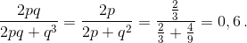

A toy cube is symmetrical, but it's unusual: two faces have two points, and the other four have one point. Sarah threw the cube several times, and as a result, the sum of all of the points was 3. Find the probability that one throw resulted in the face with 2 points coming up.
With one throw, the probability of getting a 2 is p = 1/3, and the probability of getting a one is q = 1 - p = 2/3.
Getting a total of 3 points could occur as a result of throwing the following sequences:
1, 1, 1 - the probability of this is $q^3$.
2, 1 or 1, 2 - the probability of this is 2pq.
Hence, the probability of one of the outcomes is 1, 2 or 2, 1, provided that we get 3 points in total, is equal to 
0.6.